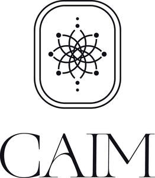

Trade Mark Journal No.2025/041 10 October 2025
UK00004272578 2 October 2025 (9,16,21,25,41,43,44)

- Class 9
- Downloadable digital content, namely meditation recordings, guided visualisations, audio programs, instructional and educational videos, and online courses in the field of health, wellness, meditation, yoga, and personal development; mobile applications featuring wellness, meditation, and personal development content; electronic publications in the nature of e-books, guides, and teaching materials; digital multimedia content in the field of health, wellness, mindfulness, meditation, and yoga.
- Class 16
- Printed matter, namely books, journals, planners, workbooks, instructional and teaching materials, guides, newsletters, greeting cards, posters, and stationery; printed materials in the field of health, wellness, meditation, yoga, and personal development; printed teaching and educational materials for use in workshops, courses, seminars, and retreats.
- Class 21
- Household and kitchen utensils and containers; cookware and tableware, namely plates, bowls, serving dishes, mugs; glassware, porcelain, ceramics, and earthenware; household containers, namely jars, bottles, flasks, and water bottles; thermal insulated wraps for cans to keep contents hot or cold; thermal flasks; ritual, ceremonial, and decorative items.
- Class 25
- Clothing, namely socks, T-shirts, hoodies, sweatpants, aprons, gloves, jackets, coats, underwear, sportswear, yoga wear, swimwear, sleepwear, scarves, and waterproof jackets; footwear, namely slippers, shoes, boots, sandals, and trainers; headgear, namely hats, caps, beanies, headbands.
- Class 41
- Education and training services, namely: training courses; residential training courses; health and wellness training; arranging and conducting of workshops, seminars, and courses in health, wellness, personal development, self-awareness, meditation, yoga, movement awareness, breathwork, and physical therapy; instruction in yoga; teaching of meditation practices; life coaching [training]; personal coaching [training]; training in cold water therapy, sauna services, infrared sauna services, infrared therapy, and thalassotherapy; instruction in group exercise; tea ceremony instruction; conducting professional workshops and seminars; arranging professional workshop and training courses; publishing of books, printed materials, and online courses in the field of health, wellness, meditation, yoga, personal development, and self-improvement; cultural, spiritual, and community events; fitness, wellness, and yoga classes.
- Class 43
- Services for providing temporary accommodation; retreats; provision of cabin accommodation; bed and breakfast services; catering services; provision of food and drink; rental of rooms, halls, or spaces for events; booking and reservation of temporary lodging for guests; hospitality services; event venue services.
- Class 44
- Medical and wellness services; holistic health services; naturopathy; herbalism; wellbeing therapies, massage, and bodywork; meditation, mindfulness, and stress-reduction services; retreats, ceremonies, and workshops with a therapeutic or healing focus; dietary and nutritional advice; nutrition counselling; nutrition as therapy; nutrition consultancy and coaching; Kambo ceremonies; wellness and holistic support provided to guests; personal health and wellbeing guidance.
R S LAMONT LIMITED
Representative: John Pryor